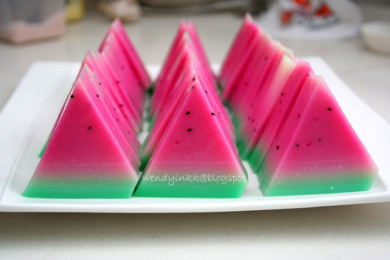

Resep puding semangka

Bahan-Bahan:
lapisan 1 :
- 1 bungkus agar2 swallow globe yg plain
- pewarna merah,biji selasih yg sudah direndam
- 120 grm gula pasir
- 800 cc susu cair (susu cair dan gulpas bisa diganti dgn SKM dengan takaran : 1/2kaleng SKM,50grm gulpas,800cc air)
lapisan 2:
- 1/2 bungkus agar agar swallow globe yg plain
- 60 grm gulpas
- 400 cc susu cair
- 1 sdt garam
lapisan 3:
- 1/2 bungkus agar agar swallow globe
- 4 sdm syrup rasa melon
- 2 tetes pewarna hijau
- 40 grm gulpas
- 400 cc air
Langkah-Langkah:
- Langkah 1 :
- Buat lapisan 1: campur semua bahan, masak di atas api kecil sambil diaduk2 supaya susu tidak mengerak di dasar panci, setelah mendidih masukkan adonan dan biji selasih ke dalam cetakan segitiga
- Langkah 2 :
- Selama menunggu lapisan 1 dingin, kita buat lapisan 2, campur semua bahan, masak di atas api kecil sambil diaduk-aduk, setelah mendidih matikan api, tunggu sebentar sampai asap uapnya hilang, masukkan adonan secara perlahan di atas lapisan 1, setelah set lalu biarkan agak dingin (ingat ya setiap akan menuangkan lapisan demi lapisan pastikan lapisan bawahnya tidak terlalu dingin, asal lapisan yg ada dalam cetakan tdk lengket di jari kita maka adonan lapisan berikutnya bisa dituangkan)
- Langkah 3 :
- Kita buat lapisan ke 3: sambil nunggu lapisan ke 2 agak dingin. mari kita buat lapisan 3 : campur semua bahan, masak di atas api kecil, stlh mendidih tuangkan ke dalm cetakan. Dinginkan.